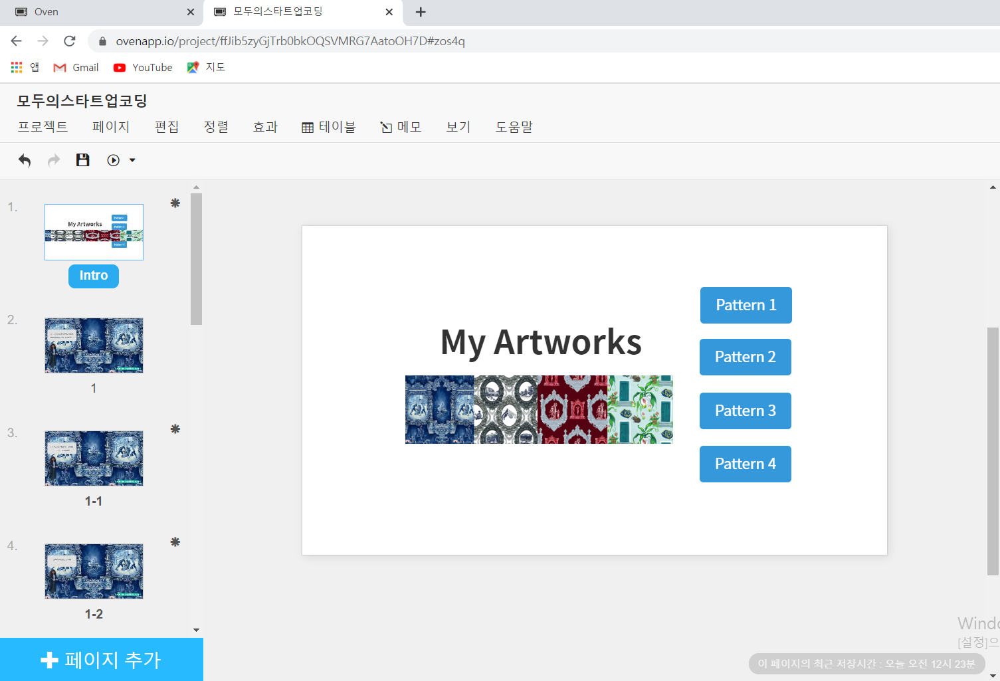

Step1 : 프로토 타입 작성
첫 화면을 보게되면 , 4가지 패턴을 선택 할 수 있다.
그림 혹은 패턴1~4의 버튼을 클릭하여 패턴에 대한 설명을 들을 수 있다.
Link!
를 클릭하여 이동 가능!

Step2 : Scratch 코딩
클릭 이벤트를 사용하여 각 패턴을 클릭 시 , 배경이 각 패턴으로 바뀌며 인물 스프라이트가 등장해 패턴에 대한 설명을 해주는 방식으로 진행된다.
Step3 : MyStory 시연 영상
MyStory 프로젝트의 시연 영상입니다.
유투브 링크 : https://youtu.be/fzTd-0LLHwU